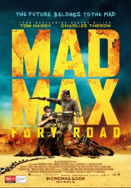
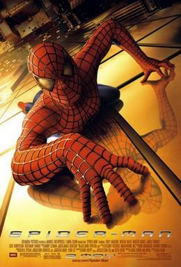
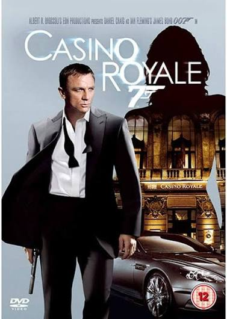
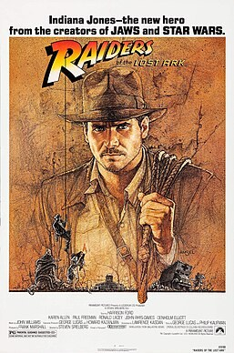
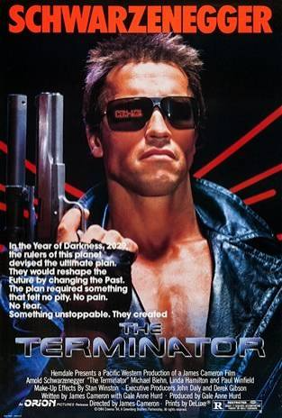

O Grande Roubo do Trem (1903), de Edwin S. Porter, com assalto, perseguição e tiroteio em cerca de dez minutos, costuma ser apontado como o primeiro filme de ação, além de um dos primeiros faroestes. Nos anos 1920, Douglas Fairbanks fez sucesso com lutas de espada e acrobacias em filmes como A Marca do Zorro (1920).
Por muitos anos, a ação apareceu misturada a outros gêneros, principalmente aventura e faroeste. A série de James Bond, iniciada em 1962, ajudou a popularizar esse tipo de filme, mas foi nos anos 1980, com Duro de Matar (1988) e outros sucessos de bilheteria, que "ação" passou a ser um gênero bem definido.
Conheça alguns dos principais subgêneros
Conheça alguns dos filmes mais icônicos do gênero




